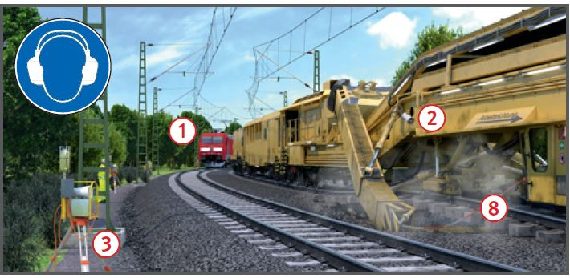
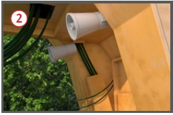
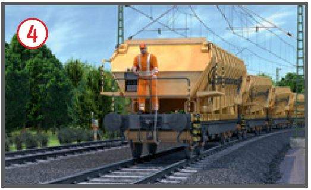
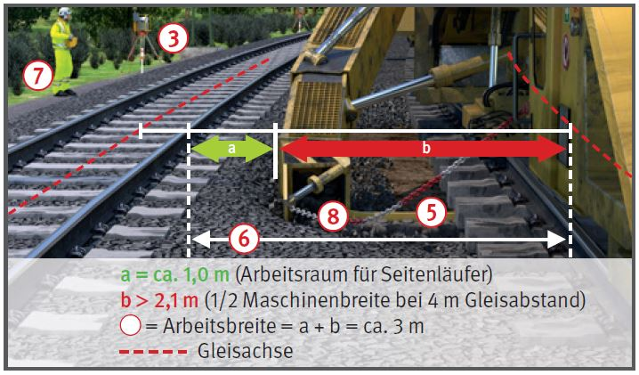

Arbeiten mit Bettungsreinigungs-/
Planumsverbesserungsmaschinen

Gefährdungen
Durch Zugfahrten im benachbarten
Gleis , Fahrbewegungen
im Arbeitsgleis, Arbeitseinrichtungen
der Maschine, Fahrleitungsanlagen
können Personen verletzt
oder getötet werden.
Allgemeines
Mit Planumsverbesserungsmaschinen werden Schotterbettung bzw. Planumsmaterial
ausgebaut, aufbereitet, wieder
eingebaut und durch neues
Material ersetzt und ergänzt.
Mit Bettungsreinigungsmaschinen
erfolgt die Bearbeitung
des Schotterbettes. Zwischen
Bettungsreinigungsmaschinen
und benachbartem Gleis gibt es
bei 4 m Gleisabstand keinen
Sicherheitsraum. Zur Bedienung
der Maschine sind Seitenläufer
auch auf der Nachbargleisseite
erforderlich.

Schutzmaßnahmen
Zugfahrten im benachbarten Gleis
Gefahr durch Zugfahrten im benachbarten Gleis:
Arbeitsplätze auf der Betriebsgleisseite (Es ist dort immer mit
Seitenläufer zu rechnen!) ,
Weiterarbeit der Maschine nach
Abgabe des Warnsignals durch
das automatische Warnsystem,
durch die hohen Maschinenstörschallpegel
kann das
Warnsignal überhört werden.
Bettungsreinigungs- und Planumsverbesserungsmaschinen
mit funkangesteuerten Warnanlagen
fest ausrüsten .
Signalpegel muss im Abstand
von 1 m neben der Maschine
am Ohr der Beschäftigten um
mindestens 3 dB(A) über dem
Maschinengeräuschpegel liegen.
Vor Arbeitsbeginn den Funkempfänger
vom Sicherungsunternehmen
auf die Maschine
setzen lassen, Ansteuerung durch
die feldseitige Warnanlage .
Gehörschutz benutzen, der für
das Signalhören im Gleisoberbau zugelassen ist (S-Kennzeichnung).
Bei akustischer Warnung eine
Wahrnehmbarkeitsprobe unter
ungünstigsten Arbeits- und
Umgebungsbedingungen durchführen.
Arbeiten erst beginnen, wenn
die im Sicherungsplan festgelegten Maßnahmen umgesetzt und wirksam sind.
Wenn Materialförder- und Silowagen
am Baulosanfang und
Baulosende über die Baulänge
hinaus reichen, muss auch hier
gesichert werden, z. B. mit Warnsystem
(bei DB Netz AG: Angabe
der Gesamtlänge = "Entfaltungslänge"
auf Seite 1 des Sicherungsplans).
Die Sicherung vor Fahrten im
benachbarten Gleis muss auch
an Arbeitsstellen vor und hinter
der Maschine, z. B. Kleineisenbehandlung,
vorhanden sein.
Bei notwendigem Aufenthalt
im Gefahrenbereich des Nachbargleises
(z. B. Störungsbeseitigung) Sicherungsmaßnahme
z. B. Sperrung des Nachbargleises, veranlassen.
Verlassen der Maschine/Aufenthalt im Nachbargleis nur
in Abstimmung mit dem Aufsichtführenden.
Bei Arbeitsstellen auf der
Betriebsgleisseite
für jeden Mitarbeiter den Weg
zum Sicherheitsraum festlegen
und
erhöhte Sicherheitsfrist für die
Bestimmung der Annäherungsstrecke festlegen lassen.
Sicherheitsraum aufsuchen,
sobald das Warnsignal ertönt.
Benachbartes Gleis nicht
betreten, solange die optische Erinnerungsanzeige des Warnsystems ansteht.
Vorhandene feste Absperrungen
nicht übersteigen.
Arbeitsbreite einschließlich
Arbeitsraum für Seitenläufer
mindestens 3 m (bei DB Netz
AG: Angabe auf Seite 1 des Sicherungsplans).
Feste Absperrung im Mittelkern
erst ab 5 m Gleisabstand
möglich (Arbeitsraum für
Seitenläufer).
Das Sicherungsunternehmen
setzt für den/die Seitenläufer
(Betriebsgleisseite) Überwachungsposten ein (wenn erforderlich
Wiederholung des Warnsignals).
Mindestens ein Überwachungsposten ist immer erforderlich .
Einsatz im Innengleis: Warnung
nur für eines der Nachbargleise
möglich (Signalverwechslung).
Zweites Nachbargleis: Feste Absperrung
bei Gleisabstand > 5 m,
sonst Sperrung erforderlich.
Sicherungsmaßnahmen an
Zwischenlagerplätzen vorsehen.
Sicherungsmaßnahmen für
Auf- und Abrüsten vorsehen.

Fahrten im Arbeitsgleis
Versorgungsfahrten (Schotterzüge)
so durchführen, dass vor
Personen, Maschinen und Fahrzeugen
im Arbeitgleis angehalten
werden kann.
Fahren auf Sicht mit reduzierter
Geschwindigkeit.
Bei geschobener Rangierfahrt:
Spitzenbesetzung mit Luftbremskopf
und Sprechfunkverbindung
zum Triebfahrzeugführer.
Gefahrenbereiche anderer
Maschinen im Arbeitsgleis freihalten.
Bei Nachtbaustellen ausreichende
Beleuchtung aller Arbeits- und
Verkehrsbereiche einrichten.

Arbeitseinrichtungen
Vor Arbeitsbeginn mögliche
Störstellen (z. B. Kabeltrassen)
beseitigen und Kampfmittelfreiheit bescheinigen lassen.
Wenn Arbeitseinrichtungen
maschinell in das Nachbargleis geschwenkt werden, ist
dieses vorher zu sperren.
Ausschwenkbegrenzungen für
bewegliche Maschinenkomponenten
so einstellen, dass der
Bahnbetrieb im Nachbargleis nicht gefährdet wird (Gleisabstand,
Bogenradius, Überhöhung
beachten).
Gefahrbereich der Räumkette
freihalten . Gefahr z. B. auch
durch von der Kette erfasste
Kabel.
Schutzeinrichtungen vor der
Räumkette einsetzen .
Not-Aus-Schalter der Arbeitseinrichtungen,
z. B. Räumkette,
vor Arbeitsbeginn auf Funktion
testen.
Wenn der Aufenthalt im Gefahrbereich
von Arbeitseinrichtungen
zur Störungsbeseitigung
erforderlich ist (Räumkette,
Bandförderer, Abwurfschacht)
sind diese gegen unbeabsichtigtes
Anlaufen zu sichern (Bedienungsanleitung
beachten).
Schutzhelm tragen zum Schutz
vor herabfallenden Schottersteinen (hoch liegende Förderbänder).
Bei Staubentwicklung:
Atemschutz (PSA),
atmungsaktive Schutzkleidung,
Hygienemaßnahmen, z. B. Waschgelegenheit,
getrennte Aufbewahrung von
Arbeits- und Privatkleidung.
Vor Verlassen der Einsatzstelle
die Transportsicherungen für
bewegliche Arbeitseinrichtungen
der Maschine einlegen.
Bei Arbeiten an hochliegenden
Arbeitsstellen Schutzmaßnahmen
gegen Absturz treffen (z. B.
Anschlagpunkte vorsehen,
persönliche Schutzausrüstung
benutzen).
Weitere Vorgaben für Wartungs-/Instandhaltungsarbeiten beachten!
Zusätzliche Hinweise
für Gleise mit Fahrleitungsanlagen
Aufstieg auf die Maschine nur
unter ausgeschalteter und geerdeter Fahrleitungsanlage.
Vorhandene Fahrleitungsanlage immer
als spannungsführend ansehen,
wenn Spannungsfreiheit nicht
zweifelsfrei feststeht.
Dies gilt auch auf Abstellgleisen
außerhalb der Baustelle.
Reinigungs- und Wartungsarbeiten
an hoch liegenden Teilen,
z. B. Förderbänder, nur durchführen, wenn die Fahrleitungsanlage
ausgeschaltet und geerdet ist.
Wenn Materialförder- und Silowagen
am Baulosanfang und
Baulosende über die Baulänge
hinaus reichen, muss auch hier
die Fahrleitungsanlage für Arbeiten an
erhöhten Standorten ausgeschaltet
und geerdet sein.